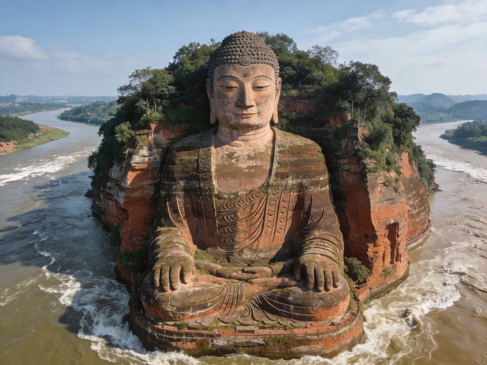
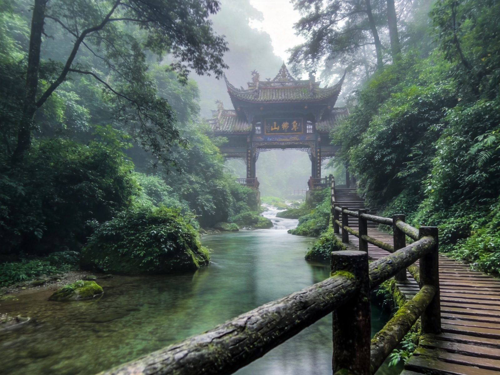
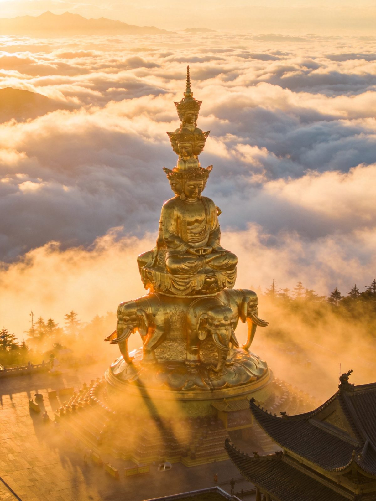

🏔️ 峨眉山 · 乐山大佛 · EMSHAN & LES
峨眉山 · 乐山大佛全攻略
世界自然与文化双遗产的「峨眉天下秀」，是佛教四大名山之一、普贤菩萨道场。登上金顶看云海日出、瞻仰十方普贤金像，山脚古刹报国寺、清音阁、万年寺清净雅致；顺江而下 30 分钟可抵世界中最高乐山大佛。门票旺季160/淡季110、低山区寺院大多免费，可轻装朝山。本文含 1 日/2 日双方案、佛寺朝圣、交通住宿、美食预算、避坑全讲清。
📍 目的地：四川乐山 · 峨眉山市
👥 1–6 人自由行
⏱️ 1 日 / 2 日 双方案
💰 旺季160 · 淡季110
⚡金顶 1 日 · 快充版
核心策略：景区观光车直达雷洞坪，步行段+索道直上金顶，一天内把「云海日出+十方普贤+金殿」一次看够，性价比最高。
👥 时间紧/亲子适配：全程代步工具衔接，体力要求低，但金顶海拔 3079 米注意防寒保暖，清晨日出最惊艳但人多，建议赶早班车。
🗺️ 行程安排
-
上午 · 报国寺 → 雷洞坪 → 金顶
🚌 游客中心乘景交车至雷洞坪（约2h）🥾 雷洞坪步行至接引殿（约20min）
🚠 金顶索道上山（约3–5min）
⚠️ 金顶索道旺季拥挤，建议 7:00–8:00 上山早排队；云海日出多现于清晨，住山上的游客占机位更从容。
-
中午前后 · 金顶核心游览
🙏 十方普贤金像（48米普贤菩萨）⛰️ 金顶云海/佛光/日出
🏛️ 华藏寺·金殿·银殿·铜殿
💡 金顶是眺望贡嘎群山与川西南云的绝佳位置，天气好能看到罕见「佛光」；晴天紫外线强，务必备墨镜与防晒。
-
下午 · 下山返程
🚠 索道下山 → 景交车返游客中心
💡 时间充裕可顺游报国寺、伏虎寺（低山区），或乘高铁直达乐山去看大佛、吃乐山美食。
🌿双日慢游 · 深度版
核心策略：第一天慢慢朝山把峨眉山清音阁、万年寺、金顶都走到，第二天顺路去看乐山大佛，一次串联两大世界级地标。
👥 深度体验适配：峨眉山+乐山是一条十分成熟的双日线——峨眉山住一晚看云海日出，第二天下山经乐山看大佛，动线顺畅不绕路。
🗺️ 行程安排
-
DAY 1 · 峨眉山清音阁+万年寺+金顶
🌲 清音阁/一线天/猴区（低山区）🙏 万年寺（普贤菩萨祖庭）
🚠 索道上金顶看云海日落
💡 低山区寺院大多免费；白龙洞、清音阁一带步道清凉；傍晚在雷洞坪或金顶住一晚，第二天清晨看日出。
-
DAY 2 · 乐山大佛 + 返程
🚌 下山 → 高铁/包车至乐山（约30min）🙏 乐山大佛（71米弥勒坐像）
🌊 九曲栈道/乘船观佛
⚠️ 乐山大佛旺季排队下栈道约 1–2h，想省时可乘游船从江面观全貌；乐山钵钵鸡、跷脚牛肉值得一尝。
⭐峨眉山 · 乐山核心景点 · 单独详览
把最值得去的几个点单独拎出来说清楚——值不值得去、怎么玩、在哪条线路。

金顶 · 云海之上的佛国
最高点
金顶 · 十方普贤金像与云海日出
海拔3079米的峨眉山最高峰，供奉着48米高的十方普贤金像，金殿、银殿、铜殿环绕。清晨云海翻涌、日出金光洒在佛像之上，偶现的「佛光」奇观更是可遇不可求，是峨眉山无争议的灵魂所在。
👍 必去理由：不到金顶等于没上峨眉山。云海+日出+普贤金像三景合一，是全程最震撼的回报。

清音阁 · 低山区清凉第一景
低山区
清音阁 · 峨眉第一幽景
掩映在深林溪涧间的古刹，黑、白二水在阁前交汇，形成「双桥清音」的经典景致。由此深入可见一线天与幽深栈道，猴群出没增添野趣，被誉为「峨眉山第一大幽景」。
👍 必去理由：低山区寺院大多免费。清凉幽静、步道平缓，适合朝山前热身或登山后放松，老少皆宜。

万年寺 · 普贤祖庭
古刹
万年寺 · 普贤菩萨道场祖庭
始建于历史悠久的峨眉山著名古刹，寺内供奉着宋代铸造的普贤菩萨骑象铜像，被誉为普贤道场祖庭之一。飞檐翘角的古老殿堂隐于苍翠群山间，晨钟暮鼓、香火绵延。
👍 必去理由：峨眉佛教文化沉淀最深的寺院之一。从清音阁步行或索道上山可达，适合感受千年佛教氛围。
乐山大佛 · 世界最高石刻佛像
世界遗产
乐山大佛 · 71米弥勒石刻坐像
开凿于唐代、历时90年而成的世界最高石刻弥勒坐像，高71米，端坐于三江汇流处，蔚为壮观。沿九曲栈道可从头顶走到脚底，或乘游船从江面远观其全貌，气势恢宏。
👍 必去理由：世界遗产级地标。峨眉山下山顺路即达，乐山钵钵鸡+跷脚牛肉+甜皮鸭美食值得一并体验。
🚗怎么去：高铁 vs 自驾 vs 公交 vs 包车
峨眉山距成都约150公里，交通成熟，选择多样。
峨眉山高铁/自驾/公交/包车四种交通方式对比
| 方式 | 🚄 高铁 | 🚗 自驾 | 🚌 公交/景区车 | 🚐 包车/拼车 |
|---|
| 时长/成本 |
成都东→峨眉山站高铁约 1–1.5h，出站换景区车约 20min |
成都绕城→峨眉山约 150km、2h |
景区观光车直达雷洞坪/万年寺等各站点 |
成都包车约 400–600 元/车，多人拼车更省 |
|---|
| 适合人群 |
✔ 2026 年最推荐：快、省心、直达景区门口 |
喜欢自驾、顺路玩乐山/周边 |
已进景区后的内部接驳（必用） |
多人结伴、带老人孩子省切换 |
|---|
| 注意 |
峨眉山站与乐山站均可达，买票时看清站点 |
节假日景区周边拥堵、车位紧张 |
景交车按线路计价，进山必乘 |
旺季上浮，提前约车 |
|---|
| 💡 一句话建议：首选 高铁——成都出发 1 小时即到峨眉山站，出站换景区观光车无缝接驳；想看乐山大佛可在同站换高铁返乐山，动线顺滑。 |
|---|
📱 购票与预约：峨眉山门票+观光车+索道建议通过官方小程序「峨眉山景区」/OTA 提前购，旺季限流、金顶索道需排队；低山区报国寺、伏虎寺等寺院大多免费。
🏨住宿推荐
住低山区（报国寺/黄湾）方便进山，住山腰（清音阁/万年寺）省第二天车程，住山顶看日出最震撼但价格高。三档供参考（2 人房计）。
经济型
报国寺/黄湾经济客栈
约 100–200 元/晚 · 人均 50–100
近游客中心、交通方便，适合预算紧、第二天进山的自由行。
中端舒适
清音阁/半山民宿
约 250–450 元/晚 · 人均 125–225
半山空气清幽、近清音阁一线天，进山省体力，性价比高。
山顶日出房
金顶/雷洞坪酒店
约 600–1500 元/晚 · 人均 300–750
住在山上清晨抢占云海日出机位；房量少、旺季需提前 1–2 周抢订。
🍜峨眉山 · 乐山必吃清单
乐山是川菜好吃的代表，峨眉山脚也遍布美食，下山后放开吃。
💰预算对比（人均）
含 1–3 人出行说明；区间为保守–宽松，实际以淡旺季与选择为准。
峨眉山1日与乐山双日方案人均预算对比
| 项目 | 金顶1日版 | 峨眉乐山2日版 |
|---|
| 大交通（成都往返人均） | 约 100–250 | 约 150–300 |
|---|
| 门票（旺季） | 160 | 160+乐山大佛80 |
|---|
| 观光车+索道 | 约 110–180 | 约 160–260 |
|---|
| 住宿 | —（当日往返可选） | 1–2 晚 100–600 |
|---|
| 餐饮 | 约 60–120 | 约 150–300 |
|---|
| 合计 · 人均 | 约 450–750 | 约 750–1450 |
|---|
💡 省法：淡季（12月中–1月中）门票仅 110 元；低山区寺院大多免费；学生/老人半价；2 日游当晚住半山民宿比住山顶更划算，清晨再乘索道上山看日出。
🧭避坑 & 实用贴士
- 金顶索道排队：旺季清晨与日出时段人流最大，建议 7:00–8:00 早排队或错峰下午；节假日可提前线上购索道票。
- 看日出住山顶：想拍云海日出要么住金顶/雷洞坪，要么最早班观光车+索道上山；当天往返大多数情况赶不上日出。
- 防猴注意：清音阁一带猴群活跃，勿投喂、勿在猴群附近进食、收好手机眼镜，避免被抢。
- 金顶防冻：海拔3000+米气温低、风大，夏天也要备薄羽绒/冲锋衣；晴天紫外线强，戴墨镜防晒。
- 淡季更省钱：冬季（12月中–1月中）门票 110 元、人少清净，只要不怕冷是性价比之选。
- 乐山大佛看时机：旺季下栈道排队久，赶时间可坐游船从江面远观全貌；出发前查乐山景区限流公告。